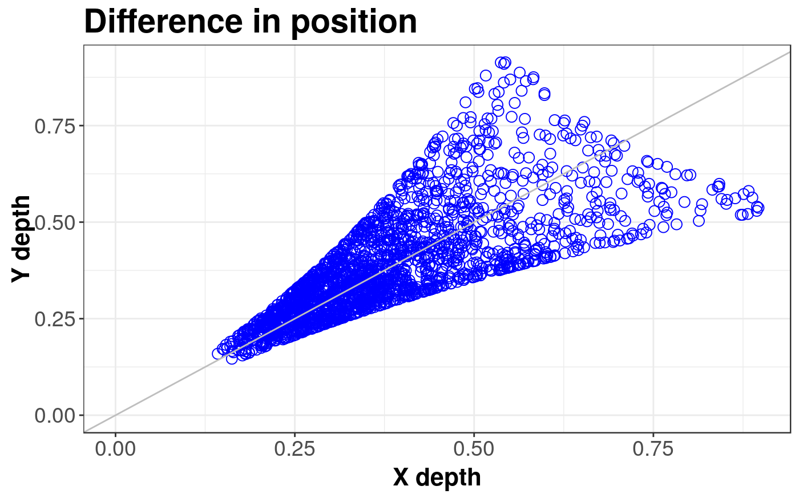
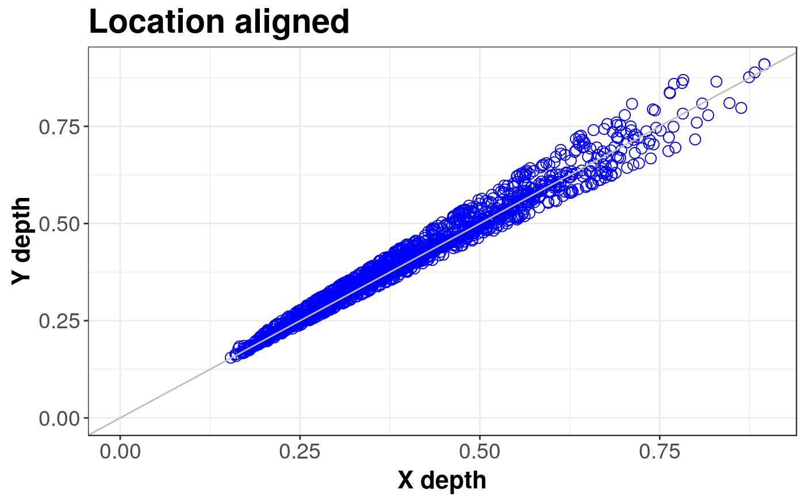
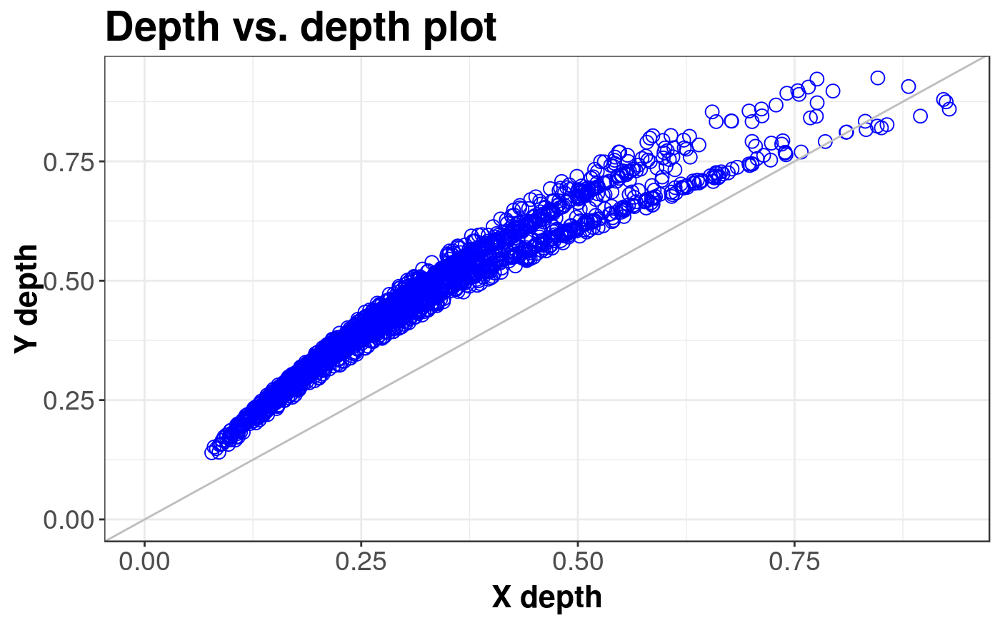

Produces a DD plot which allows to compare two multivariate datasets or to compare a subject dataset with theoretical distribution.
ddPlot( x, y, scale = FALSE, location = FALSE, name = "X", name_y = "Y", title = "Depth vs. depth plot", depth_params = list() )
Arguments
| x | The first or only data sample for ddPlot. |
|---|---|
| y | The second data sample. |
| scale | logical. determines whether the dispersion is to be aligned. |
| location | determines whether the location is to be aligned to 0 vector with depth median. |
| name | name for data set x. It will be passed to drawing function. |
| name_y | as above for y |
| title | title of the plot. |
| depth_params | list of parameters for function depth (method, threads, ndir, la, lb, pdim, mean, cov, exact). |
Details
For two probability distributions \( F \) and \( G \), both in \( {{{R}} ^ {d}} \), we can define depth vs. depth plot being very useful generalization of the one dimensional quantile-quantile plot: $$ DD(F, G) = \left\{\left( D({z}, F), D({z}, G) \right), {z} \in {{{R}} ^ {d}} \right\} $$
Its sample counterpart calculated for two samples \( {{{X}} ^ {n}} = \{{{X}_{1}}, ..., {{X}_{n}}\} \) from \( F \), and \( {{Y} ^ {m}} = \{{{Y}_{1}}, ..., {{Y}_{m}}\} \) from \( G \) is defined as $$ DD({{F}_{n}}, {{G}_{m}}) = \left\{\left( D({z}, {{F}_{n}}), D({z}, {{G}_{m}}) \right), {z} \in \{{{{X}} ^ {n}} \cup {{{Y}} ^ {m}}\} \right\} $$
References
Liu, R.Y., Parelius, J.M. and Singh, K. (1999), Multivariate analysis by data depth: Descriptive statistics, graphics and inference (with discussion), Ann. Statist., 27, 822--831.
Liu, R.Y., Singh K. (1993), A Quality Index Based on Data Depth and Multivariate Rank Test, Journal of the American Statistical Association vol. 88.
Examples
library(sn) library(mvtnorm) # EXAMPLE 1: Location difference standard <- mvrnorm(1000, c(0, 0), diag(2)) shift <- mvrnorm(1000, c(0.5, 0), diag(2)) ddPlot(x = standard, y = shift, title = "Difference in position")#> DDPlot#> #> Depth Metohod: #> ProjectionddPlot(x = standard, y = shift, location = TRUE, title = "Location aligned")#> DDPlot#> #> Depth Metohod: #> Projection# EXAMPLE 2: Scale difference standard <- mvrnorm(1000, c(0, 0), diag(2)) scale <- mvrnorm(1000, c(0, 0), 4 * diag(2)) ddPlot(x = standard, y = scale)#> DDPlot#> #> Depth Metohod: #> ProjectionddPlot(x = standard, y = scale, scale = TRUE)#> DDPlot#> #> Depth Metohod: #> Projection